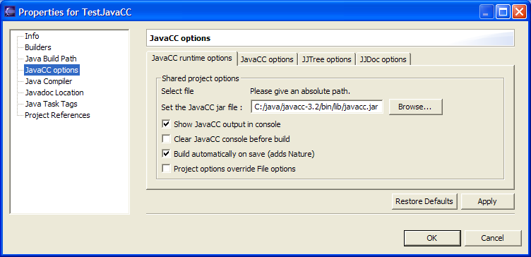
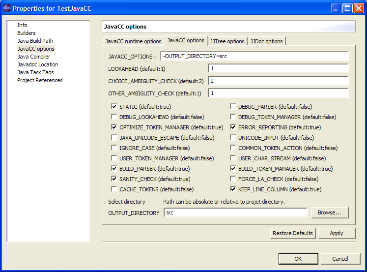
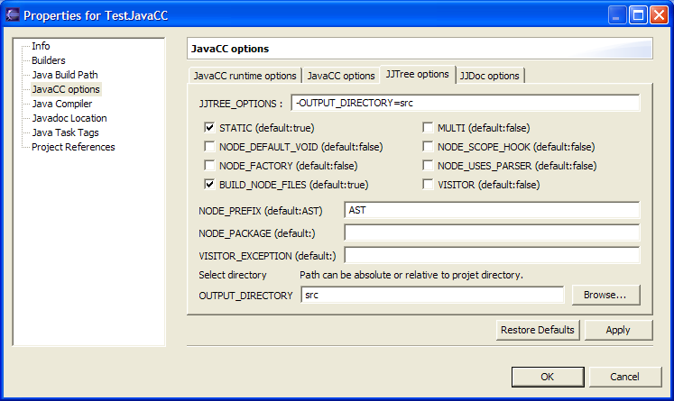
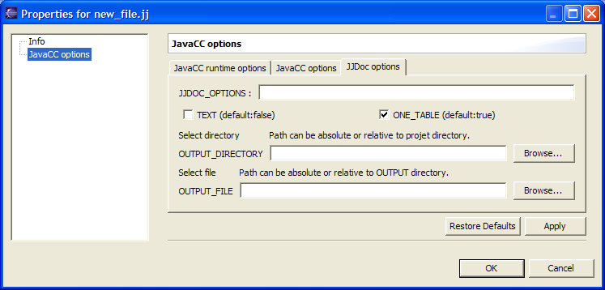

You can set properties for the whole project, select the
projet right clic -> properties.
Or you can set properties for each file (deselect "Project
options override File options")
This is designed to handle options like -OUTPUT_FILE which can
only be set for a single file.
Runtime options

When you check "Build automatically before save"
a nature and a builder will be added when you clic OK.
Note that automatic compilation is only effective if you check
the menu "Project" -> "Build automatically".
The Checkbox "Project options override file options"
forces the options to be the same for all files.
Uncheck this if you want to use a per file options setting.
JavaCC options

All these options are described in the javacc documents.
Note that the first line "JAVACC_OPTIONS" recalls the
options passed to javacc.
You can type in this line or check the boxes, but do not type a
wrong option (like -MY_OPTION=foo) it will be ignored.
It is sometimes useful to "DEBUG_PARSER" or to "DEBUG_LOOKAHEAD"
just the time to correct an error.
When doing that, you can do it for one file only, setting the
properties per file.
JJTree options

All these options are described in the javacc documents.
The plugin has its own default ; "Restore Defaults"
sets the output directory to "src"
JJDoc options

There is a bug in JJDOC : the option "-OUTPUT_DIRECTORY"
is not taken by JJDoc.
Workaround : you can use the -OUTPUT_FILE option setting the
directory with the file.
Drawback : you have to do that for each file.
Note that the option -OUTPUT_FILE doesn't show up when you set
the properties for the project.
It would be of no use to generate doc for all the grammar files
in the same html file.